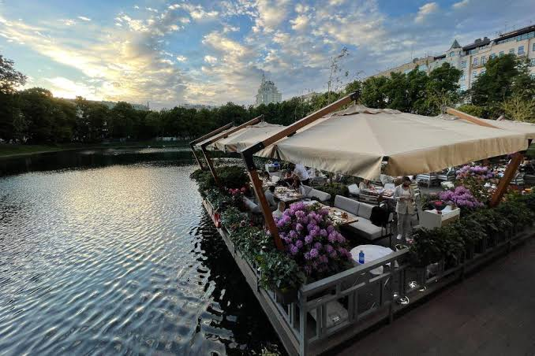
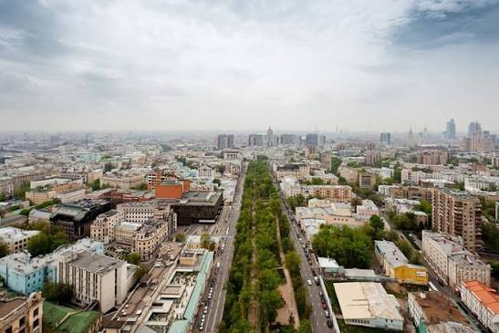
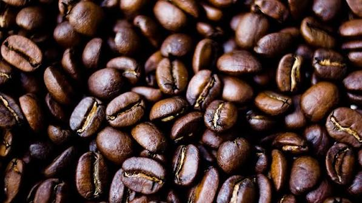

В центре между кофейнями несколько минут пешком.
|
 Веранда у пруда. |
 Бульвар. |
Нажмите на миниатюру — изображение 600×400 откроется в новом окне по центру.
| Район | Чем интересен | Карта |
|---|---|---|
 |
Выбирайте место под настроение. | Где найти? |
| Тверской бульвар | Классические кафе | Карта |
| Патриаршие пруды | Веранды | Карта |
| Арбат | Туристический маршрут | Карта |